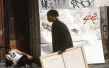

ONLINE
MUSEUM
OF STREET
ART


ABOUT →
THE MUSEUM
Moscow,
since 2019
Online Museum of Street Art — an art museum located in the center of Moscow. It is the first independent online museum of street art with its own library and educational laboratories. The museum's collection offers an overview of the most striking works of street art from around the world, including the most ambitious projects. Visitors from any point of the world can visit excursions or listen to lectures about the origins of street art at any time. The best art critics, as well as production teams, worked on the excursion programs to achieve the maximum effect of presence. We strive to make art accessible to everyone who has the Internet access.
June 11 - October 10,2024
BASQUIAT, AL DIAZ.
SAMO
May 19 - July 21,2024
KEITH HARING.
GRANDS FORMATS
June 29 - August 27,2024
AGON-NOGA.
DIALOGUE WITH
THE CITY
PAST →
EXHIBITIONS
The archive contains
information about
past exhibitions
January — March, 2022
VHILS.
BE VERY SPECIAL
Archeology of the city. The most unusual street art artist about the concept of time in the environment. The guide of the exhibition is the author of the works
April — May, 2022
BANKSY.
DISMALAND
A park unsuitable for children, chaotic, new world in which you can get rid of senseless escapism. The largest Banksy exhibition
January — March, 2022
POKRAS
LAMPAS
The exhibition is a story about the most famous calligrapher from Russia, who started with street art and became famous all over the world